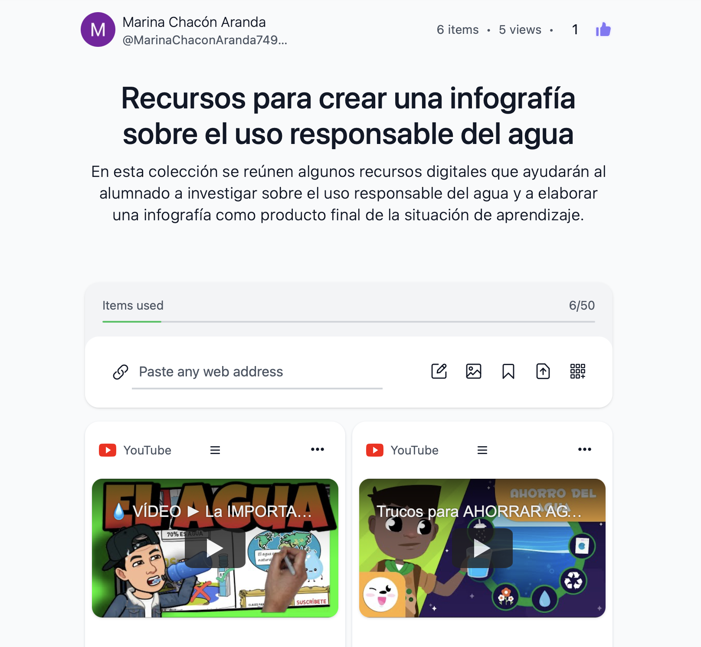
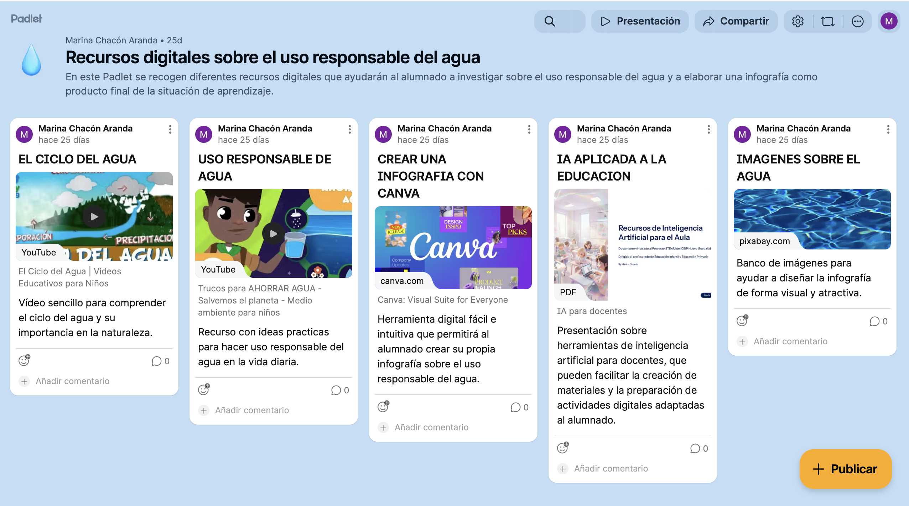

Recursos y curación de contenidos
Para el desarrollo de esta Situación de Aprendizaje se han seleccionado y organizado diversos recursos digitales que facilitan la investigación guiada y el aprendizaje autónomo del alumnado.
Se han utilizado herramientas de curación de contenidos como Wakelet y Padlet, que permiten acceder a información relevante sobre el medioambiente en Andalucía, favoreciendo el desarrollo de la competencia digital.
Estos recursos contribuyen al desarrollo de la competencia digital, la competencia para aprender a aprender y la competencia en comunicación lingüística.
Wakelet: colección de recursos digitales.
Se ha elaborado una colección de recursos digitales mediante la herramienta Wakelet, con el objetivo de facilitar al alumnado la búsqueda, selección y organización de información relevante sobre el uso responsable del agua.
Esta colección incluye vídeos educativos, bancos de imágenes y recursos para la creación de infografías, permitiendo al alumnado investigar de forma guiada y elaborar su producto final.

Puedes acceder a la colección de Wakelet en el siguiente enlace: https://wakelet.com/wake/IQfF34Oab2ThNywZuaGH9
Esta herramienta favorece la estructuración de la información de forma clara y accesible, favoreciendo el aprendizaje autónomo y el desarrollo de la competencia digital.
Padlet: espacio colaborativo de recursos
Se ha utilizado la herramienta Padlet como espacio digital para recopilar y compartir recursos relacionados con el uso responsable del agua.
En este entorno se incluyen vídeos educativos, herramientas digitales como Canva y bancos de imágenes, que permiten al alumnado acceder a información relevante de forma visual y organizada.
Además, este recurso favorece la participación activa, ya que puede utilizarse como un espacio colaborativo donde el alumnado puede aportar ideas, materiales y reflexiones durante el desarrollo de la Situación de Aprendizaje.

Puedes acceder a la colección de Padlet en el siguiente enlace: https://padlet.com/mchaara395/recursos-digitales-sobre-el-uso-responsable-del-agua-50ht4i3s2k6o5smb
Este recurso permite organizar la información de manera visual y accesible, favoreciendo el aprendizaje significativo y el desarrollo de la competencia digital del alumnado.
Conclusión
El conjunto de estas herramientas de curación de contenidos permiten al alumnado acceder a información relevante de forma organizada, favoreciendo el aprendizaje autónomo, el pensamiento crítico y el desarrollo de la competencia digital.
Asimismo, se promueve un uso seguro, responsable y crítico de la información digital, fomentando el respeto a la propiedad intelectual y la protección de datos.